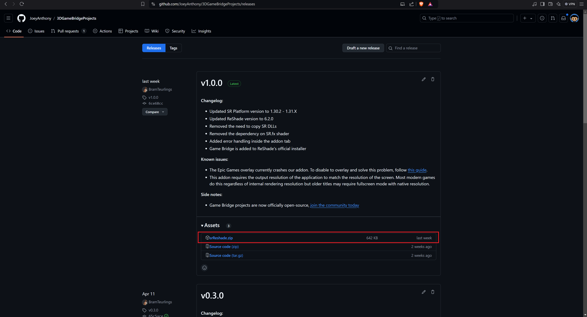
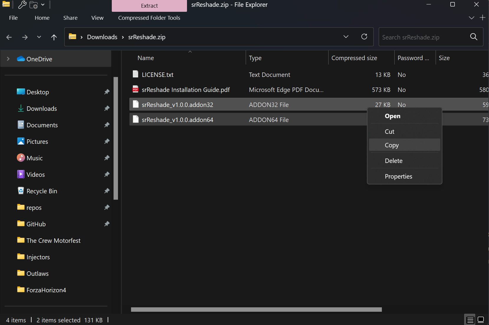

Simulated Reality Displays¶
Simulated Reality (SR) Displays, once called Dimenco, are now supported by Leia Inc. This guide will help you use SuperDepth3D with hardware that uses SR technology.
Main Website
Hardware Developers Links
Acer Spatiallabs
ASUS Spatial Vision
Sony Spatial Reality
{kind=link}
Getting Started with SuperDepth3D¶
To use SuperDepth3D with SR Displays, you can follow either the simple text guide or the manual guide below.
For a video tutorial, watch this video guide.

Screenshot of a video guide. SuperDepth3D for Simulated Reality Displays.¶
Easy Text Guide¶
To install ReShade and SuperDepth3D easily, follow these steps:
Download ReShade: Get the add-on version of ReShade.

ReShade download page screenshot.¶
Install ReShade: Run the ReShade.exe file to install it.
ReShade installer screenshot.¶
Select Game Executable: Choose or find your game’s main file (executable). For example, we’ll use Forza Horizon 4.

ReShade installer game selection screenshot.¶
Click Open: Press the Open button.
Select API: Choose the API (like DirectX 11 or OpenGL) and click Next.

ReShade installer API selection screenshot.¶
Select SuperDepth3D: From the Depth3D Repository, check the box next to
SuperDepth3D.fx.ReShade installer shader selection screenshot.¶
Click Next: Press the Next button.
Select 3DGameBridgeProjects Add-on: Make sure to choose the 3DGameBridgeProjects add-on.

ReShade installer add-on selection screenshot.¶
Click Next and then Finish.
{kind=link}
{kind=link}
Manual Guide¶
If you prefer to install things yourself, follow these steps:
Install ReShade: Install ReShade or add it to your game. Make sure you use the add-on version of ReShade.

ReShade installer screenshot.¶
If ReShade is already installed, you can skip this step.
Download 3DGameBridge: Get the newest version of 3DGameBridge.
 3DGameBridge GitHub page screenshot.¶
Copy Add-ons: Copy both add-ons, or just the one you need, depending on your game’s setup.
 Screenshot of the add-on files.¶
Paste Add-ons: Put the add-ons in the same folder as your game’s executable file or where ReShade’s .dll file is installed.

Screenshot of the game folder with the add-ons.¶
Start the game to check if it works.
{kind=link}
{kind=link}
Important Notes¶
When you start the game, you might need to set your main monitor to the Simulated Reality Display. If you don’t, the game might not pick the right screen, and you’ll see a black screen.

Screenshot of monitor settings.¶
Also, make sure the game runs at the correct resolution for your 3D display. If the resolution is too low, the image might look stretched or blurry.
{kind=link}
Screenshot of game resolution settings.¶